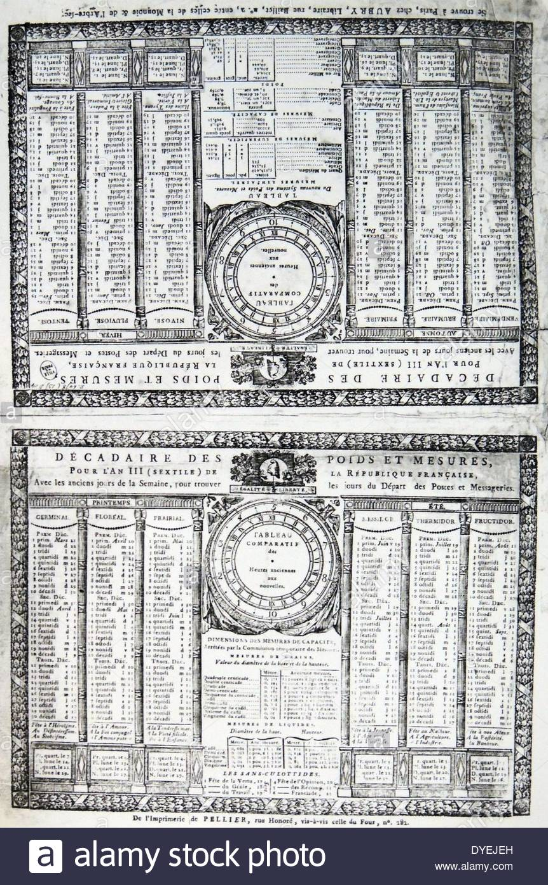
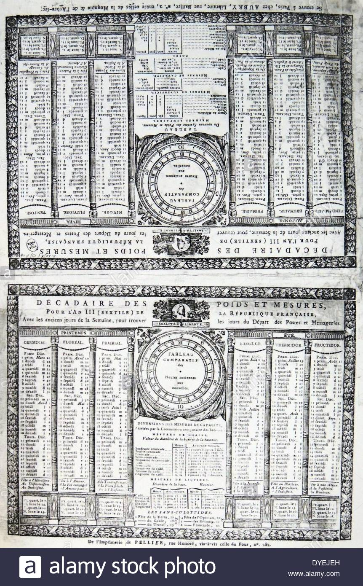

Project by Kalyani Tupkary. Website built by Jon Packles.

Here a year has only weeks. Each week with 10 days. Every day
lasts for 10 hours with 100 minutes in an hour and 100 seconds
in a minute.
Listen to the Voicemail

The French Republican Revolutionary Calendar established a new timekeeping system from 1793 until 1806. “This was introduced not to correct some astronomical discrepancy but to mark a break with the past. The Church, the guardian of the calendar with its feasts and fasts and saints’ days was one of the sources of power of the hated ancient order; it had to be done away with.”1 It employed ‘decimal time’ in order to be rational (in contrast to religious “irrationality”), and parallel the metric system. Using metric time was a proclamation that all Frenchmen became equal. A year had 12 months of 30 days each with 5 days at the year-end. Hence its power lay in its symbolic value rather than practical purpose. A leap year was to have an extra intercalary day. Months were standardized into three equal decades of 10 days each, each day was divided into 10 hours, hours into 100 minutes, and minutes into 100 seconds. This period also saw watchmakers build decimal clocks and watches. “Despite its revolutionary symbolism, the new calendar turned out to be unpopular and inconvenient. The French workman objected to working a 10-day week; most people objected to working on Sundays; the decimal hours caused intolerable confusion; business with the rest of Europe (still adhering to the Gregorian calendar) became difficult. As revolutionary fervour ebbed away, the provisions of the calendar were gradually repealed. In September 1805, Sunday was restored as the day of rest, and from 1 January 1806, the Gregorian calendar was reinstated.”
 

- Image 1: Clock dial displaying both decimal (inside the circle) and duodecimal time (on the outer rim)
- Image 2: The French Republican Calendar
- Reference: Richards, E. G. Mapping Time: The Calendar and Its History. New York: Oxford University Press, 1999.